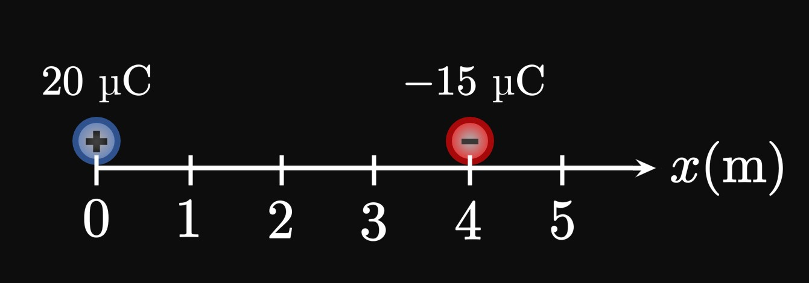
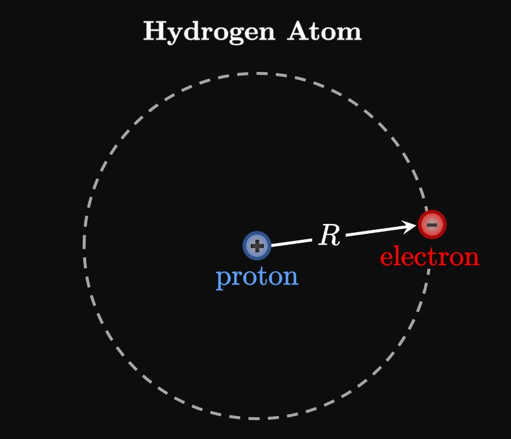

A boy applies a force of \(20 \un N\)
to push a toy \(0.4 \un m\)
calculate the work done in the situation.
SOLUTION
Work is defined as the force multiplied by the distance moved:
\[W = (20)(0.4) = \boxed{8 \un J}\]
Thus, the boy transfers \(8 \un J\) of energy to the toy
to make it move.
EXERCISE 2
For
A car is driven a distance of \(100 \un{ft}\)
as the engine supplies a force of \(7000 \un{lb}\)
calculate the work done in the situation.
SOLUTION
We calculate the work done by multiplying force and distance:
\[W = (7000)(100) = \boxed{700000 \un{ft-lb}}\]
EXERCISE 3
For
A trainer lifts a \(10 \un{kg}\) dumbbell \(1.2 \un{m}\) above his waist
calculate the work done in the situation.
SOLUTION
The acceleration due to gravity on the dumbbell is \(g = 9.8 \undiv{m}{sec}^2.\)
The dumbbell's weight is therefore
\[(10)(9.8) = 98 \un N \pd\]
To lift the dumbbell, the lifter must exert a force of \(98 \un N\) upward
to counter the downward force of gravity.
Accordingly, the lifter applies a work of
\[W = (98)(1.2) = \boxed{117.6 \un J}\]
EXERCISE 4
For
A dropped \(3 \un{lb}\) water bottle is placed back on a table
of height \(5 \un{ft}\)
calculate the work done in the situation.
SOLUTION
To raise the water bottle,
a force of \(3 \un{lb}\) must be applied upward to counter the force of gravity.
(The force on the bottle is \(3 \un{lb}.\))
Accordingly, the work done is
\[W = (3)(5) = \boxed{15 \un{ft-lb}}\]
EXERCISE 5
For
A crate on a flat surface is pushed \(3 \un m\) to the right
by a force of \(16 \un N\) directed \(60 \degree\) above the horizontal
calculate the work done in the situation.
SOLUTION
Only the horizontal component of the force is useful in pushing the crate.
The amount of force in the horizontal direction is
\[F_x = 16 \cos 60 \degree = 8 \un N \pd\]
Accordingly, the work done is
\[W = F_x d = (8)(3) = \boxed{24 \un J}\]
EXERCISE 6
For
A block with \(60 \un J\) of kinetic energy is stopped by friction on a rough track
calculate the work done in the situation.
SOLUTION
Because the block stops, all of its kinetic energy is lost.
Friction therefore takes away \(60 \un J\) of energy, meaning
it does \(\boxed{-60 \un J}\) of work.
EXERCISE 7
A couch is slid \(4\) feet across a flat surface with an applied force of \(30\) pounds.
Calculate the work done if the couch is moved in
\(5\) seconds
\(40\) seconds
SOLUTION
Work is independent of time;
the time required for a motion is irrelevant.
So for both cases, the work is simply
\[W = Fd = (30)(4) = \boxed{120 \un{ft-lb}}\]
EXERCISE 8
An object moves along the \(x\)-axis due to the force function
\[F(x) = 4x^3 + 2x + 1 \cma\]
where \(F\) is measured in newtons and \(x\) is measured in meters.
How much work is done to move the object from the origin to \(x = 1 \ques\)
SOLUTION
To calculate the work done, we integrate \(F(x)\) from \(x = 0\) (the origin)
to \(x = 1.\)
Doing so, we get
\[
\ba
W &= \int_0^1 \par{4x^3 + 2x + 1} \di x \nl
&= \par{x^4 + x^2 + x} \intEval_0^1 = \boxed{3 \un J}
\ea
\]
EXERCISE 9
The force that a particle experiences as it travels along the \(x\)-axis is given by
\[F(x) = 2 \cos \frac{\pi x}{4} \cma\]
where \(F\) is measured in pounds and \(x\) is measured in feet.
When an object moves from the origin to \(x = 2,\)
how much work is done by the force?
SOLUTION
The work done by the force is given by integrating \(F(x)\) from \(x = 0\)
(the origin) to \(x = 2,\) as follows:
\[
\ba
W &= \int_0^2 2 \cos \frac{\pi x}{4} \di x
= 2 \par{\frac{4}{\pi}} \sin \frac{\pi x}{4} \intEval_0^2 \nl
&= \frac{8}{\pi} \par{1 - 0} = \boxed{\frac{8}{\pi} \un{ft-lb}} \approx 2.546 \un{ft-lb} \pd
\ea
\]
EXERCISE 10
Along the \(x\)-axis, there exists a variable force
\[F(x) = 3x - 2 \cma\]
where \(F\) is measured in newtons and \(x\) is measured in meters.
The positive direction is to the right.
A \(10 \un{kg}\) object is placed at \(x = -1.\)
In what direction does the object move initially?
Find the object's initial acceleration.
Calculate the work needed to move the object to \(x = 3.\)
SOLUTION
We see \(F(-1) = -5 \lt 0.\)
Accordingly, the force acts to the left,
meaning the object is moving to the left.
By Newton's Second Law, \(F = ma.\)
Initially (when \(x = -1\)),
the force is \(F(-1) = \) \(-5 \un N.\)
The acceleration is therefore
\[a = \frac{F}{m} = \frac{-5}{10} = \boxed{-0.5 \undiv{m}{sec}^2}\]
(The negative force and acceleration simply imply that the object is pushed leftward.)
To move the object to the right,
we must supply a force equal to \(F(x)\) to the right
(to counter the leftward push).
Therefore, the work we need is given by
\[
\ba
W &= \int_{-1}^3 (3x - 2) \di x \nl
&= \par{\frac{3x^2}{2} - 2x} \intEval_{-1}^3 = \boxed{4 \un J}
\ea
\]
EXERCISE 11
A force of \(50\) newtons allows a spring to be stretched by \(25\) centimeters past its natural length.
How much work is required to stretch the spring from its natural length
to \(30\) centimeters past its natural length?
SOLUTION
By Hooke's Law, the spring constant is given by
\[k = \frac{F}{x} = \frac{50}{0.25} = 200 \undiv{N}{m} \pd\]
So the work required to stretch the spring from \(x = 0\) to \(x = 0.3\) is
\[W = \int_0^{0.3} 200 x \di x = 100 x^2 \intEval_0^{0.3} = \boxed{9 \un J}\]
EXERCISE 12
A pull of \(100\) pounds stretches a spring by \(2\) feet past its natural length.
How much work must be done to extend the spring from \(2\) feet past its natural length
to \(4\) feet past its natural length?
SOLUTION
The spring constant is given by Hooke's Law to be
\[k = \frac{F}{x} = \frac{100}{2} = 50 \undiv{lb}{ft} \pd\]
The work required to stretch the spring from \(x = 2\) to \(x = 4\) is then
\[W = \int_2^4 50 x \di x = 25x^2 \intEval_2^4 = \boxed{300 \un{ft-lb}}\]
EXERCISE 13
A sample of gas in a container is sealed by a piston.
Its initial volume and pressure are \(4\) cubic feet and \(80\)
pounds per square inch, respectively.
If the gas's volume expands to \(6\) cubic feet,
then calculate the work done by the gas.
SOLUTION
Using Boyle's Law with the initial volume \(4 \un{ft}^3\) and pressure \(80 \un{psi},\)
we find
\[80 = \frac{C}{4} \implies C = 320 \pd\]
To calculate the work done by the gas, we integrate \(C/V\) from
\(V = 4\) (initial volume) to \(V = 6\) (final volume):
\[
\ba
W &= \int_4^6 \frac{320}{V} \di V = 320 \ln \abs V \intEval_4^6 \nl
&= 320 \par{\ln 6 - \ln 4} = \boxed{320 \ln \frac{3}{2} \un{ft-lb}} \approx 129.749 \un{ft-lb} \pd
\ea
\]
EXERCISE 14
In a tank, a mixed sample of gases is sealed above by a movable lid.
The sample initially has a volume of \(10\) cubic meters
and a pressure of \(30\) newtons per square meter.
The combined volume of the gases then increases to \(25\) cubic meters.
Calculate the work done by the sample of gas as it pushes up the lid.
SOLUTION
Using Boyle's Law with the initial volume and pressure, we calculate
\[30 = \frac{C}{10} \implies C = 300 \pd\]
The work done by the gas is therefore given by integrating \(C/V\)
from \(V = 10\) to \(V = 25,\) as follows:
\[
\ba
W &= \int_{10}^{25} \frac{300}{V} \di V = 300 \ln \abs V \intEval_{10}^{25} \nl
&= 300 \par{\ln 25 - \ln 10} = \boxed{300 \ln \frac{5}{2} \un{J}} \approx 274.887 \un{J} \pd
\ea
\]
EXERCISE 15
For
calculate the work needed to pump all the water to the top;
water's density is \(1000 \undiv{kg}{m}^3\) \(= 62.5 \undiv{lb}{ft}^3\).
SOLUTION
Take \(y = 0\) to be the top of the prism,
and let the positive \(y\)-axis be the downward direction.
Then the water extends from \(y = 3\) to \(y = 3 + 6\) \(= 9.\)
A thin, horizontal layer of water at \(y\) with a height (thickness) of \(\Delta y\)
has volume
\[(7 \cdot 4) \Delta y = 28 \Delta y \pd\]
So its weight is \(28 \Delta y \times 62.5\) \(= 1750 \Delta y \un{lb}.\)
To pump out this layer of water, a force of \(1750 \Delta y \un{lb}\)
must be directed upward (to counter the force of gravity) by a distance \(y.\)
The work done in lifting this layer is therefore
\[\Delta W = 1750 y \Delta y \pd\]
Hence, the work done in pumping out all the water is
\[W = \int_3^9 1750 y \di y = 875y^2 \intEval_3^9 = \boxed{63000 \un{ft-lb}}\]
EXERCISE 16
For
calculate the work needed to pump all the water to the top;
water's density is \(1000 \undiv{kg}{m}^3\) \(= 62.5 \undiv{lb}{ft}^3\).
SOLUTION
Let \(y = 0\) be the level of the cylinder's top.
Then the water is bounded between \(y = 4\) and \(y = 9.\)
A thin, horizontal layer of water at \(y\) with a height of \(\Delta y\)
has volume
\[\pi (3)^2 \Delta y = 9 \pi \Delta y \pd\]
So its weight is \(9 \pi \Delta y \times 1000\) \(= 9000 \pi \Delta y \un{N}.\)
To pump out this layer of water, a force of \(9000 \pi \Delta y \un{N}\)
must therefore be applied upward (to counter the force of gravity) by a distance \(y.\)
The work done in lifting this layer is therefore
\[\Delta W = 9000 \pi y \Delta y \pd\]
Hence, the work done in pumping out all the water is
\[
\ba
W &= \int_4^9 9000 \pi y \di y = 4500 \pi y^2 \intEval_4^9 \nl
&= \boxed{292500 \pi \un J} \approx 918915.851 \un J \pd
\ea
\]
EXERCISE 17
For
calculate the work needed to pump all the water to the top;
water's density is \(1000 \undiv{kg}{m}^3\) \(= 62.5 \undiv{lb}{ft}^3\).
SOLUTION
The first step to solving a work problem
is to define an axis system.
It is easiest to let the \(y\)-axis face straight downward such that \(y = 0\)
is the level of the cone's top vertex.
Then the water is bounded between the lines \(y = 3\)
and \(y = 10.\)
Consider a thin layer of water of height \(\Delta y\)
located a depth of \(y\) beneath the top.
(The layer is therefore a distance of \(10 - y\) above the bottom.)
The layer is approximated by a disk of volume
\[\Delta V = \pi r^2 \Delta y \cma\]
where by similar triangles
\[\frac{r}{y} = \frac{4}{10} \implies r = \frac{2}{5} y \pd\]
The disk's volume is therefore
\[\Delta V = \pi \par{\frac{2}{5} y}^2 \Delta y
= \frac{4}{25} \pi y^2 \Delta y \pd \]
Its weight is therefore
\[62.5 \cdot \frac{4}{25} \pi y^2 \Delta y = 10 \pi y^2 \Delta y \pd\]
To effectively pump the disk to the top,
we require an upward force equal to the weight,
maintained over a distance of \(y.\)
The work done in pumping out this layer is then approximated by
\[\Delta W = y \par{10 \pi y^2 \Delta y} = 10 \pi y^3 \Delta y \pd\]
Hence, the total work required to pump out all the water is
\[
\ba
W &= \int_3^{10} 10 \pi y^3 \di y
= \frac{5}{2} \pi y^4 \intEval_3^{10} \nl
&= \boxed{24797.5 \pi \un J} \approx 77903.644 \un J \pd
\ea
\]
EXERCISE 18
For
calculate the work needed to pump all the water to the top;
water's density is \(1000 \undiv{kg}{m}^3\) \(= 62.5 \undiv{lb}{ft}^3\).
SOLUTION
Let the \(y\)-axis face straight downward such that \(y = 0\)
is the level of the cone's top.
Then the water is bounded between the lines \(y = 4\)
and \(y = 12.\)
Consider a thin layer of water of height \(\Delta y\)
located a depth of \(y\) beneath the top.
(The layer is therefore a distance of \(12 - y\) above the bottom.)
We approximate the layer to be a disk of volume
\[\Delta V = \pi r^2 \Delta y \cma\]
where by similar triangles
\[\frac{r}{12 - y} = \frac{6}{12} \implies r = \frac{1}{2} (12 - y) \pd\]
The disk's volume is therefore
\[\Delta V = \pi \parbr{\frac{1}{2} (12 - y)}^2 \Delta y
= \frac{1}{4} \pi (12 - y)^2 \Delta y \pd \]
Its weight is its mass (volume \(\Delta V\) multiplied by
the density of water, \(1000\))
multiplied by the acceleration due to gravity—that is,
\[1000(9.8) \Delta V = 1000(9.8) \frac{1}{4} \pi (12 - y)^2 \Delta y =
2450 \pi (12 - y)^2 \Delta y \pd\]
To effectively pump the disk to the top,
we must exert an upward force equal to the weight, applied over a distance of \(y.\)
The work done in pumping out this layer is then approximated by
\[\Delta W = 2450 \pi y (12 - y)^2 \Delta y \pd\]
So the total work required to pump out all the water is
\[
\ba
W &= \int_4^{12} 2450 \pi y (12 - y)^2 \di y \nl
&= 2450 \pi \par{72 y^2 - 8y^3 + \frac{y^4}{4}} \intEval_4^{12} \nl
&= \boxed{2.5088 \pi \times 10^6 \un J} \approx 7.882 \times 10^6 \un J \pd
\ea
\]
EXERCISE 19
Positive and negative charges attract each other,
whereas charges with the same sign repel each other.
Coulomb's Law states that the electrostatic force
between two charged particles of charges \(q_1\) and \(q_2\) (measured in coulombs, \(\text C\))
separated by a distance \(r\)
is given by
\[F = \frac{k \abs{q_1 q_2}}{r^2} \cma\]
where \(k = 9.0 \times 10^9\) \(\un{N m}^2/\un{C}^2.\)
Figure 5
shows an arrangement of two charges fixed along the positive \(x\)-axis.
(Note: \(1 \muUnit C\) \(= 1 \times 10^{-6} \un C.\))
Calculate the work done by the electrostatic force to
move the \(20 \muUnit C\) charge to \(x = 3\)
move the \(-15 \muUnit C\) charge to \(x = 3\)
move the \(-15 \muUnit C\) charge to \(x = 1\)

SOLUTION
The two particles attract each other with an electrostatic force of
\[
F = \frac{\par{9.0 \times 10^9} \abs{\par{20 \times 10^{-6}} \par{-15 \times 10^{-6}}}}{r^2}
= \frac{2.7}{r^2} \pd
\]
The \(20 \muUnit C\) needs to be moved from \(x = 0\) to \(x = 3.\)
Since this positive particle is attracted to the negative particle,
the positive particle experiences a force acting to the right.
(We therefore give \(F\) a positive sign.)
The positive particle is initially located a distance of \(4 \un m\) left of the negative particle;
at \(x = 3,\) this distance becomes only \(1 \un m\) left.
So the work done by the electrostatic force is
\[
\ba
W &= \int_{-4}^{-1} \frac{2.7}{r^2} \di r
= -\frac{2.7}{r} \intEval_{-4}^{-1} \nl
&= 2.7 \par{\frac{1}{-4} - (-1)} = \boxed{2.025 \un J}
\ea
\]
The negative particle is attracted to the positive particle
and so experiences a force of \(F = 2.7/r^2\) to the left.
(The sign of \(F\) is therefore negative.)
Initially, the negative particle is \(4 \un m\) right of the positive particle;
after it is moved to \(x = 3,\) the negative particle is \(3 \un m\) right.
The work done is therefore
\[
\ba
W &= \int_4^3 -\frac{2.7}{r^2} \di r
= \frac{2.7}{r} \intEval_4^3 \nl
&= 2.7 \par{\frac{1}{3} - \frac{1}{4}} = \boxed{0.225 \un J}
\ea
\]
At \(x = 1,\) the negative particle is only \(1 \un m\) to the right.
The work done is therefore
\[
\ba
W &= \int_4^1 -\frac{2.7}{r^2} \di r
= \frac{2.7}{r} \intEval_4^1 \nl
&= 2.7 \par{1 - \frac{1}{4}} = \boxed{2.025 \un J}
\ea
\]
EXERCISE 20

In the Rutherford–Bohr model for the hydrogen atom, an electron undergoes a circular orbit of radius \(R\)
around a stationary proton (Figure 6).
When the hydrogen atom absorbs a photon, the atom's total energy increases
and the electron jumps to a higher energy level,
meaning its orbit increases in radius.
Using Coulomb's Law in terms of \(R,\)
calculate the energy needed to move the electron farther out to an orbit of radius \(2R.\)
(A proton has a charge of \(1.6 \times 10^{-19}\) \(\un C,\)
while an electron has a charge of \(-1.6 \times 10^{-19}\) \(\un C.\))
SOLUTION
The electron is attracted to the center proton,
so the electron experiences a force toward the center.
To move the electron farther away (to a larger orbit), we must apply an equal
force radially outward.
By Coulomb's Law, at some distance \(r\) we must apply an outward force equal to
\[F = \frac{\par{9.0 \times 10^9} \par{1.6 \times 10^{-19}}^2}{r^2} = \frac{2.304 \times 10^{-28}}{r^2} \pd\]
We integrate along the electron's path—namely, from \(r = R\) to \(r = 2R.\)
The energy needed equals the work done by the electrostatic force,
which we calculate in joules to be
\[
\ba
W &= \int_R^{2R} \frac{2.304 \times 10^{-28}}{r^2} \di r
= -\frac{2.304 \times 10^{-28}}{r} \intEval_R^{2R} \nl
&= -2.304 \times 10^{-28} \par{\frac{1}{2R} - \frac{1}{R}} = \boxed{\frac{1.152 \times 10^{-28}}{R}}
\ea
\]
EXERCISE 21
A helicopter is called to hook onto and lift a \(400\)-foot vertical cable
that weighs \(800\) pounds and is initially clumped on the ground.
Calculate the work done in this process.
SOLUTION
Let \(y = 0\) be the top of the cable, and let \(y = 400\)
be the bottom of the cable.
Since the cable weighs \(800 \un{lb}\) and is \(400 \un{ft}\) long,
its linear density is \(2 \undiv{lb}{ft}.\)
Consider a segment of cable of vertical length \(\Delta y.\)
The weight of the segment is therefore \(2 \Delta y \un{lb}.\)
A force of \(2 \Delta y \un{lb}\) must therefore be applied upward to counter gravity
and successfully lift this portion of cable.
Since the segment is lifted a distance of approximately \(y,\)
the work we require is
\[\Delta W \approx \underbrace{2 \Delta y}_{\text{force}} \cdot \underbrace{y}_{\text{distance}}
= 2 y \Delta y \pd\]
The total work in raising the cable is therefore
\[
\ba
W &= \int_0^{400} 2y \di y = y^2 \intEval_0^{400} \nl
&= \boxed{160000 \un{ft-lb}}
\ea
\]
EXERCISE 22
A cord weighs \(0.15\) pound and is \(0.5\) foot long.
Initially slack, it is pulled upward and fully extended vertically.
Calculate the work required to raise the cord up to its full length.
SOLUTION
It is easiest to let \(y = 0\) be the top of the cord and let \(y = 0.5\)
be the bottom of the cord.
Because the cord weighs \(0.15 \un{lb}\) and is \(0.5 \un{ft}\) long,
the linear density is \(0.3 \undiv{lb}{ft}.\)
Consider a segment of cord of vertical length \(\Delta y.\)
The weight of the segment is therefore \(0.3 \Delta y \un{lb}.\)
To successfully pull up the portion of cord,
a force of \(0.3 \Delta y \un{lb}\) must be applied upward to counter the downward force of gravity.
Since the segment is lifted a distance of approximately \(y,\)
the work we require is
\[\Delta W \approx \underbrace{0.3 \Delta y}_{\text{force}} \cdot \underbrace{y}_{\text{distance}}
= 0.3 y \Delta y \pd\]
The total work in raising the cord is therefore
\[
\ba
W &= \int_0^{0.5} 0.3 y \di y = \frac{0.3y^2}{2} \intEval_0^{0.5} \nl
&= \boxed{0.0375 \un{ft-lb}}
\ea
\]
EXERCISE 23
Work is done to stretch a spring by a distance of \(d\) past its natural length.
What multiple of this work is needed to stretch the spring from a distance of \(d\)
to a distance of \(2d\) past its natural length?
(Assume that \(d\) is not too large.)
SOLUTION
The work needed to stretch the spring from \(x = 0\) (equilibrium position)
to \(x = d\) is
\[W_1 = \int_0^d kx \di x = \tfrac{1}{2} kx^2 \intEval_0^d = \tfrac{1}{2} kd^2 \pd\]
To stretch the spring from \(x = d\) to \(x = 2d,\)
we require a work of
\[W_2 = \int_d^{2d} kx \di x = \tfrac{1}{2} kx^2 \intEval_d^{2d}
= \tfrac{1}{2} k (2d)^2 - \tfrac{1}{2} kd^2 = \tfrac{3}{2} kd^2 \pd\]
We therefore see
\[\frac{W_2}{W_1} = \frac{\tfrac{3}{2} kd^2}{\tfrac{1}{2} kd^2} = 3 \pd\]
So \(W_2 = 3 W_1,\)
meaning three times more work is required to stretch the spring from \(x = d\) to \(x = 2d.\)
EXERCISE 24
If a gas expands in volume by \(\Delta V\)
while maintaining a constant pressure \(P,\)
then show that the work done by the gas is \(W = P \Delta V.\)
SOLUTION
By Boyle's Law, \(P = C/V.\)
If \(P\) is constant,
then the work done is
\[W = \int_{V_a}^{V_b} P \di V = P \int_{V_a}^{V_b} \di V = P \par{V_b - V_a} = P \Delta V \cma\]
as requested.
(Usually, we cannot take \(P = C/V\) out of the integrand because
\(P\) isn't constant!)
EXERCISE 25
A sample of gas is stored in a container and sealed by a piston.
Its initial pressure is \(P_0,\) and its initial volume is \(V_0.\)
As the gas's temperature increases, its volume doubles.
How much work does the gas do in pushing up the piston?
SOLUTION
Let \(V_0\) be the gas's initial volume.
Its final volume is then \(2 V_0.\)
Boyle's Law gives
\[P_0 = \frac{C}{V_0} \implies C = P_0 V_0 \pd\]
The work the gas does is therefore
\[
\ba
W &= \int_{V_0}^{2V_0} \frac{P_0 V_0}{V} \di V \nl
&= P_0 V_0 \ln \abs{V} \intEval_{V_0}^{2V_0} \nl
&= P_0 V_0 \ln \frac{2 V_0}{V_0} = \boxed{P_0 V_0 \ln 2}
\ea
\]
EXERCISE 26
A container of gas with a volume of \(3\) cubic feet and a pressure of \(12\) pounds per square inch is sealed by a piston.
A spring whose stiffness is \(k = 150\) pounds per foot is attached to both the container and the piston;
the spring is initially in equilibrium.
(See Figure 7.)
The gas's volume then expands to \(5\) cubic feet.
Calculate the distance \(d\) the spring stretches.
SOLUTION
Using Boyle's Law with \(V = 3 \un{ft}^3\) and \(P = 12 \un{psi},\) we attain
\[12 = \frac{C}{3} \implies C = 36 \pd\]
The work done by the gas is therefore
\[W = \int_3^5 \frac{36}{V} \di V = 36 \ln \abs V \intEval_3^5 = 36 \ln \frac{5}{3} \pd\]
This quantity is the amount of energy the gas uses to push out the piston;
it therefore equals the work done in stretching the spring by a distance \(d.\)
We express the work done in stretching the spring as
\[\int_0^d 150 x \di x = 75 x^2 \intEval_0^d = 75 d^2 \pd\]
Accordingly, we see
\[75 d^2 = 36 \ln \frac{5}{3} \implies d = \sqrt{\frac{36}{75} \ln \frac{5}{3}} \approx \boxed{0.495 \un{ft}}\]
(Of course, the negative solution for \(d\) is nonsense.)